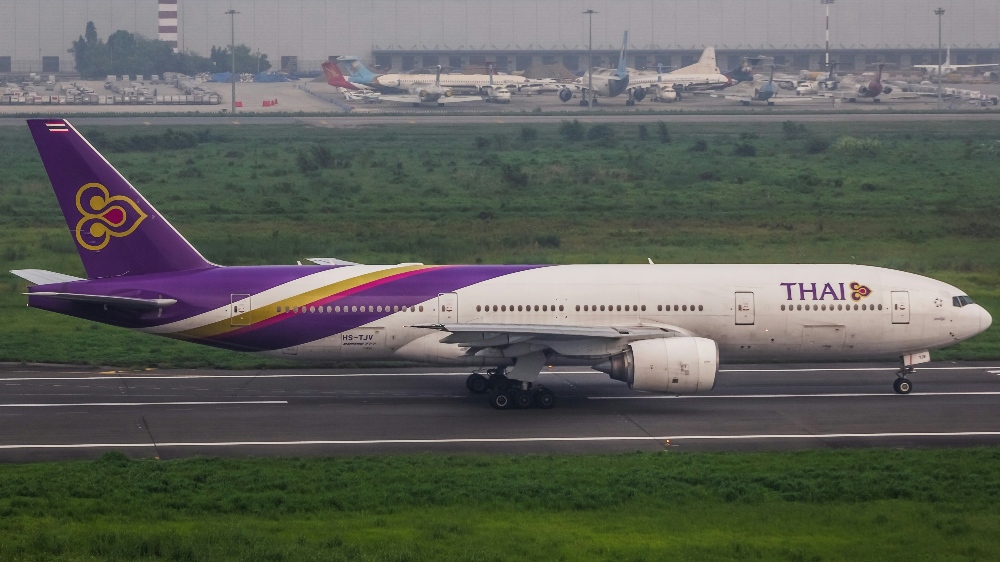
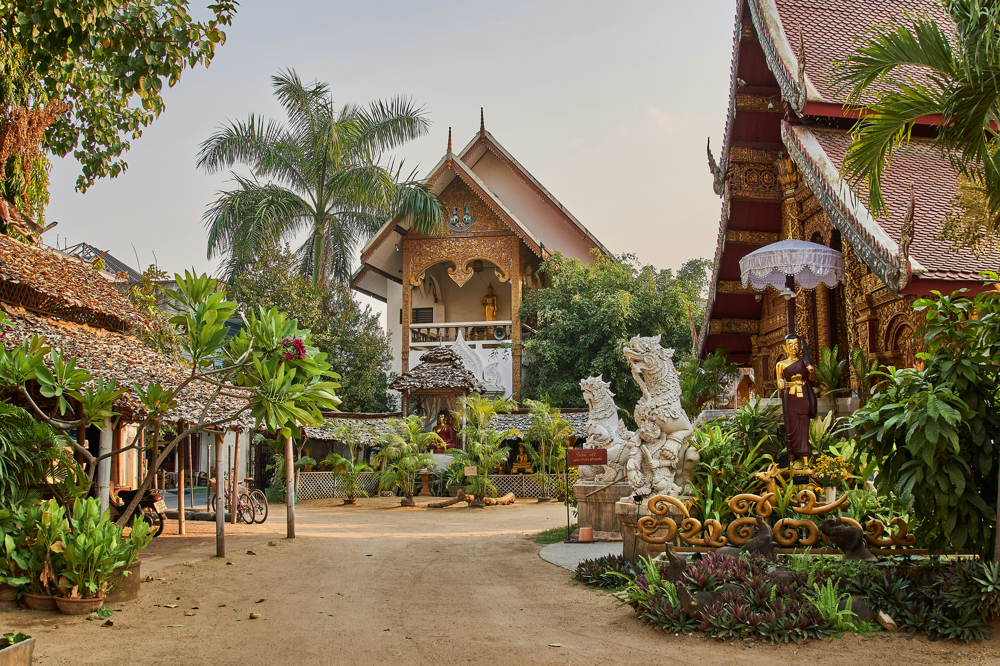

Een comfortabele reis
Een reis naar Thailand begint natuurlijk met het plannen van je vlucht en het kiezen van de perfecte accommodatie. Of je nu droomt van een luxe hotel aan een tropisch strand, een gezellig hostel in een bruisende stad of een sfeervol resort midden in de natuur: Thailand heeft voor iedere reiziger iets te bieden. Met een goede voorbereiding kun je jouw reis niet alleen comfortabeler, maar vaak ook voordeliger maken.
De vliegreis
Vanuit Nederland kun je vanaf Amsterdam Schiphol naar Thailand vliegen. De belangrijkste internationale luchthaven is Suvarnabhumi Airport in Bangkok. Vanaf hier kun je gemakkelijk verder reizen naar andere delen van het land.
-
Rechtstreekse vlucht
Een directe vlucht van Amsterdam naar Bangkok duurt ongeveer 11 tot 12 uur. Dit is een comfortabele optie als je zo snel mogelijk op je bestemming wilt aankomen. -
Vlucht met een tussenstop
Je kunt ook vliegen met een overstap, bijvoorbeeld in het Midden-Oosten of Azië. Deze vluchten zijn soms voordeliger, maar de totale reistijd is langer -
Binnenlandse vluchten
Wil je naast Bangkok ook eilanden zoals Phuket of bestemmingen in het noorden bezoeken? Dan kun je gebruikmaken van binnenlandse vluchten. Zo bespaar je tijd tijdens het reizen door het land.
Waar kun je overnachten?
Thailand heeft een groot aanbod aan accommodaties, van eenvoudige guesthouses tot luxe resorts. Welke accommodatie het beste bij je past, hangt af van je budget, je reisgezelschap en de plaatsen die je wilt bezoeken.
-
Hostels
Ideaal voor reizigers met een kleiner budget. Je kunt kiezen voor een gedeelde slaapzaal of, bij sommige hostels, een privékamer. -
Hotels
Een goede keuze als je comfort, privacy en voorzieningen zoals airconditioning, een zwembad of ontbijt belangrijk vindt. -
Resorts
Perfect voor een ontspannen vakantie aan zee. Veel resorts beschikken over een zwembad, tropische tuinen en restaurants. -
Guesthouses
Kleinschalige accommodaties met een persoonlijke sfeer, vaak gerund door lokale eigenaren. -
Appartementen en vakantiehuizen
Handig als je met familie of vrienden reist en graag meer ruimte of een eigen keuken wilt.

